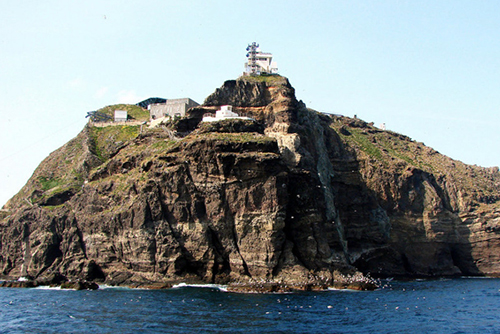
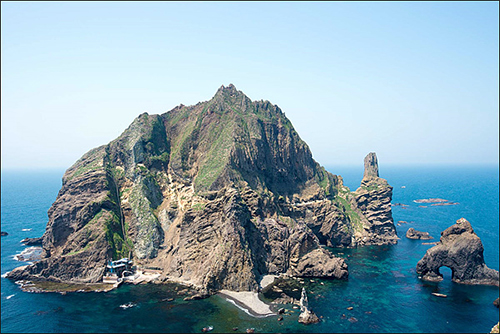

동도는 독도의 동쪽에 위치하며, 해발 98.6m로 서도보다 낮습니다.
관광객을 위한 접근 시설과 헬기 착륙장이 마련되어 있으며, 동도는 연구와 보존을 위한 기초 시설들이 갖추어져 있습니다.
동도는 서식지 환경이 서도보다 덜 복잡하며, 주로 해조류와 작은 식물들이 자생합니다.
서도는 독도의 서쪽에 위치하며, 해발 168.5m로 동도보다 높습니다.
서도에는 연구 시설이 적으며, 주로 자연 상태로 유지되고 있습니다. 관광객의 접근이 제한되어 있으며, 보존을 위해 관리되고 있습니다.
서도는 동도보다 다양한 식물군이 자생하고 있으며, 해안가와 내륙에서 다양한 식물과 조류가 서식합니다. 서도는 독도의 주요 서식지로서 다양한 해양 생물과 조류가 번식하는 장소입니다.
